Para esta aula usaremos o mblock para criar um jogo de corrida formula 1
primeiramente precisamos escolher os dois atores, dois carros de formula 1
O carro principal tem uma carecterização caso perca o jogo:
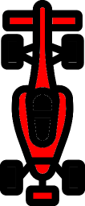
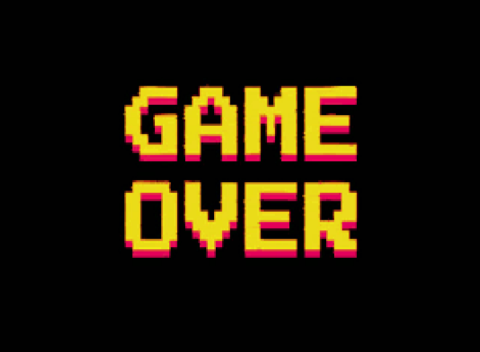
Programação do carro principal vermelho e sua caracterização:
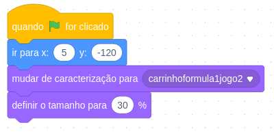
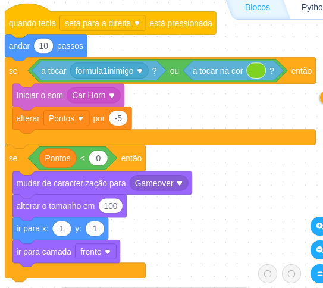
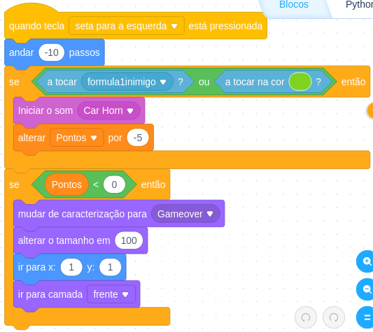
Carrinho formula 1 inimigo:
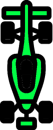
Para a programação da carrinho inimigo precisamos criar uma variável chamada pontos.
Programação de carro inimigo
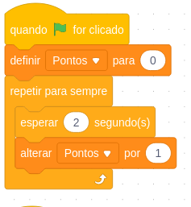
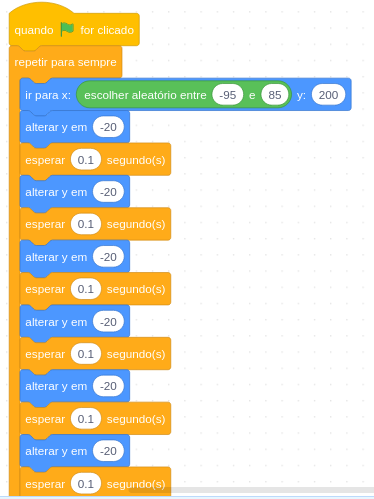
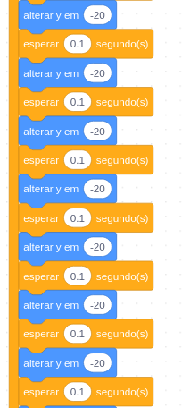
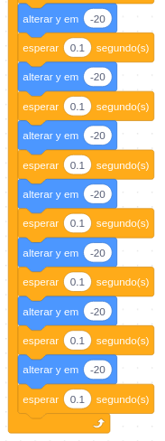
Para dar a impressão de velocidade precisamos escolher 5 cenários
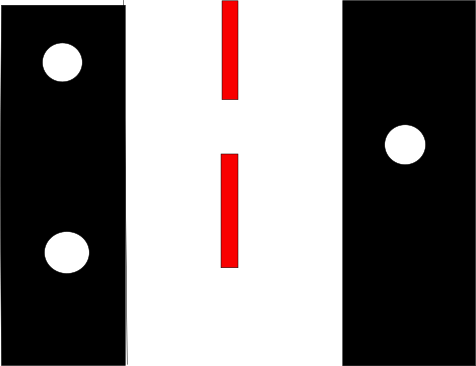
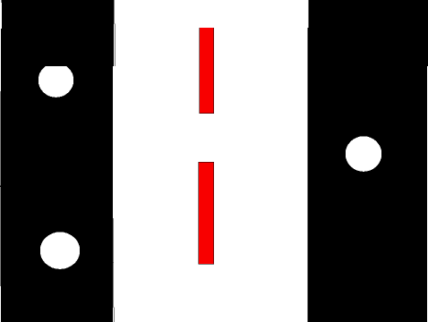
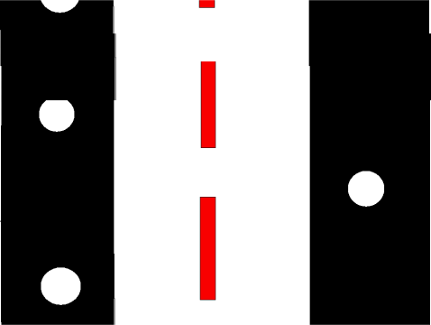
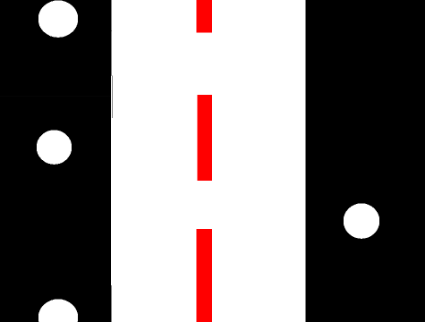
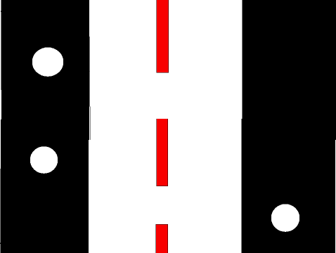
Programação Cenários:
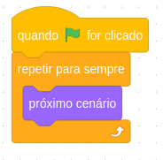